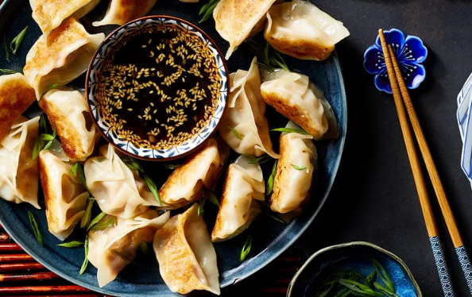

Pork Dumplings

Description
This Chinese dumplings recipe is from Liana Cafe House in Seattle's International District. They sell these traditional fried pork dumplings from a tiny takeout shop but with this recipe, you can see how to make them at home!
Ingredients
- 1 pound ground pork
- 3 cloves garlic, minced
- 1 large egg, beaten
- 2 tablespoons finely chopped Chinese chives
- 2 tablespoons soy sauce
- 1 ½ tablespoons sesame oil
- 1 tablespoon minced fresh ginger
- 50 dumpling wrappers
- ½ cup vegetable oil for frying, or as needed
Steps
- To make the dumplings: Mix pork, garlic, egg, chives, soy sauce, sesame oil, and ginger in a large bowl until thoroughly combined. Overhead of a dumpling mixture in a green bowl. Place a dumpling wrapper on a lightly floured work surface and spoon about 1 tablespoon of filling in the middle.
- Dumpling wrapper with dumpling filling being spooned in. Wet the edge with a little water and crimp together forming small pleats to seal the dumpling. Repeat to form remaining dumplings.Overhead of dumpling wrappers being crimped together and placed on a plate. Heat 1 to 2 tablespoons vegetable oil in a large skillet over medium-high heat. Place 8 to 10 dumplings in the pan and cook until browned, about 2 minutes per side.
- Overhead of dumplings cooking on a skillet. Pour in 1 cup of water; cover and cook until dumplings are tender and pork is cooked through, about 5 minutes.Overhead of dumplings cooking in a skillet with added water.
- Repeat to cook remaining dumplings, adding more oil and water for each batch. Serve dumplings with dipping sauce.